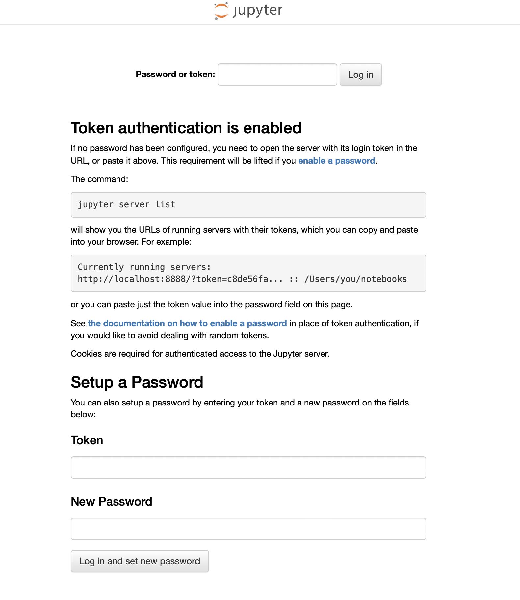
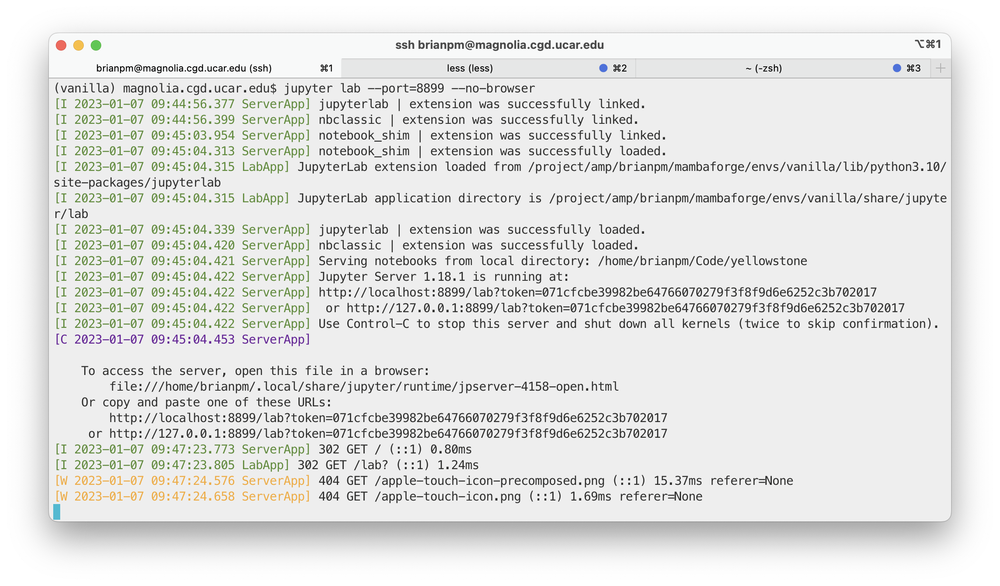

The steps are simple:
ssh yourusername@cgdservername.cgd.ucar.edu
conda activate your_environment
cd /your/code/repository
jupyter lab --port=8899 --no-browserBack on your local machine:
ssh -N -f -L 8899:localhost:8899 yourusername@cgdservername.cgd.ucar.eduNote: the default port that Jupyter wants to use is 8888, but I often found that port was already being used on one machine or the other, so I just arbitrarily changed to 8899.
Go to browser and enter into the address bar:
localhost:8899You will likely get an authentication page:
In this case, go back to your original ssh session in the first terminal window (where you started the jupyter server). It’ll look something like: 
Copy the token string and put it into the browser field.
That should authenticate you, and jupyter lab will open. At this point, leave those two terminal sessions open and interact with jupyter through the browser.
When you are done, the shutdown procedure is easy. - In the browser,
in the jupyter interface go to “File” and at the bottom select “Log Out”
or “Shut Down” - If you select “Log Out” that does not shut down the
server, and you can log back into it. - If you select “Shut Down” that
should log you out and also shut down the server. - At any time, you can
shut down the server by going to your first session and pressing
Ctrl+C, and then enter “y” when asked if you really want to
shut down the server. You can also hit Ctrl+C again, and I
think it’ll shut down. - To close that ssh tunnel, go back to any local
terminal and run ps aux | grep <port number> to
identify the process ID, and then run kill -9 [PID]